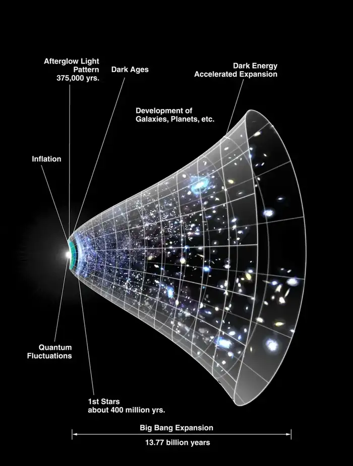

What inflation does
In 1980 Alan Guth proposed a brief period of exponential expansion in the first instant. It flattens the universe, smooths it, and stretches quantum fluctuations into the seeds of galaxies. Those seeds have a specific statistical signature: a nearly scale-invariant spectrum of density perturbations.
Maps, diagrams and images


The cosmic microwave background matches that prediction with remarkable precision. Planck's maps show a spectrum with a slight tilt from perfect scale invariance, and a lack of detectable primordial gravitational waves so far. That is inflation's strongest card: it predicted something subtle and the data agreed.
The criticisms
The measure problem. Inflation may never end globally, producing infinitely many pocket universes. Any outcome happens somewhere, so the theory struggles to make probabilistic predictions without an arbitrary choice of measure.
It is hard to falsify. The inflaton field's potential is a free function; almost any observation can be accommodated by choosing it. Critics — notably Ijjas, Steinhardt and Loeb — argue this makes inflation unfalsifiable in practice.
The singularity remains. Inflation sits after a beginning it does not explain, and the initial conditions it was invented to explain may simply be assumed.
Bounce cosmologies avoid the singularity by having the universe contract and re-expand — the ekpyrotic model, loop quantum cosmology's bounce, and various string-gas models.
Their appeal is that a contracting phase can also generate the observed spectrum, and the singularity is replaced by a bounce. Their problem is that a bounce requires conditions that are hard to arrange: the universe must remain smooth through the contraction, and the entropy problem has to be solved rather than postponed.
Where the evidence sits: the data do not yet separate the two families. Both predict a nearly scale-invariant spectrum; they differ on tensor modes, non-Gaussianity and running — quantities the next generation of CMB experiments is designed to measure.
The archive calls this a live debate. It is a disagreement between serious cosmologists about how a theory should behave, and it has not been settled by observation.
Why it is in the archive
Because 'the Big Bang' is routinely presented either as a proven beginning of everything or as a myth, when the honest picture is a well-tested hot expansion plus an unsettled story about the first instant.
Related: quantum gravity, the Hubble tension.
Sources for this page
- Wikipedia, “Cosmic inflation” — mechanism, evidence, criticismen.wikipedia.org
- Guth (1981), Physical Review D 23, 347 — the original proposaldoi.org
- Planck Collaboration (2018), cosmological parameters, arXiv:1807.06209arxiv.org
- Ijjas, Steinhardt & Loeb, “Pop Goes the Universe”, Scientific Americanwww.scientificamerican.com
Open resources on this topic
- PapersOpen-access articles: DOAJ · PubMed Central · Internet Archive Scholar
- BooksPublic-domain and borrowable copies: Open Library · Project Gutenberg · Google Books · Internet Archive
Cite this page
Momin, S. (2026). Inflation versus a Bounce. The Larger World Archive. https://drsamonline.github.io/LARGE_GLOBE/inflation-bounce.htmlMomin, Sohil. “Inflation versus a Bounce.” The Larger World Archive, 2026, https://drsamonline.github.io/LARGE_GLOBE/inflation-bounce.html.Momin, Sohil. “Inflation versus a Bounce.” The Larger World Archive, 2026. https://drsamonline.github.io/LARGE_GLOBE/inflation-bounce.html.@misc{inflation2026inflation,
author = {Momin, Sohil},
title = {Inflation versus a Bounce},
year = {2026},
howpublished = {The Larger World Archive},
url = {https://drsamonline.github.io/LARGE_GLOBE/inflation-bounce.html},
note = {Last reviewed 20 November 2026}
}Last reviewed 20 November 2026 · Corrections policy · this page is not peer reviewed